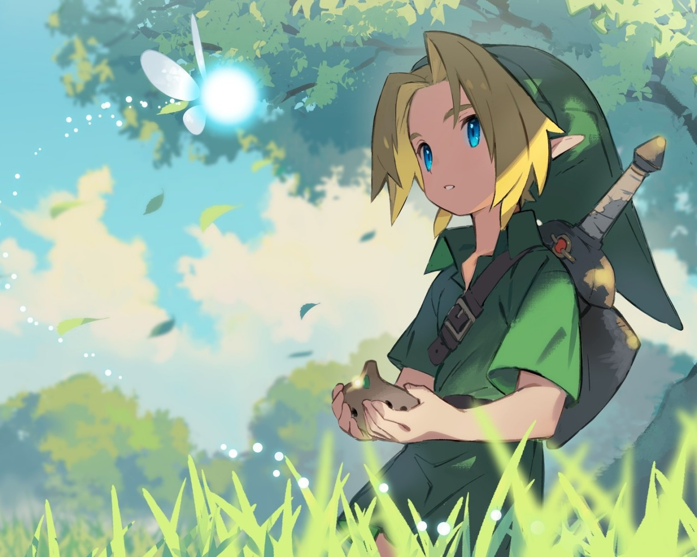

Retrouvez ici toutes nos histoires, et laisser vous plonger dans des univers fantastiques, où chaques
reves est possible.
Mon Voisin Totoro
Après avoir emménagé dans une grande et belle maison en pleine nature, Satsuki
et sa petite sœur Mei découvriront dans
les bois des esprits de la forêt et décideront de se lier d’amitié avec eux.

Zelda Ocarina of time
Dans le royaume d'Hyrule, Link un jeune garçon vivant dans la forêt reçoit les
responsabilités de parcourir le royaume
afin d'empêcher qu'il ne succombe au force du mal
Le Voyage de Chihiro
Après une balade avec ses parents qui doit les conduire vers leurs nouvelles maisons la jeune
chihiro se retrouve plongé
dans un monde, où les âmes et les esprits ont remplacés les humains.
Le Petit Prince
La discussion émouvante de deux amis loin de chez eux, se racontant leurs histoires.